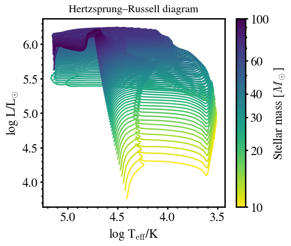
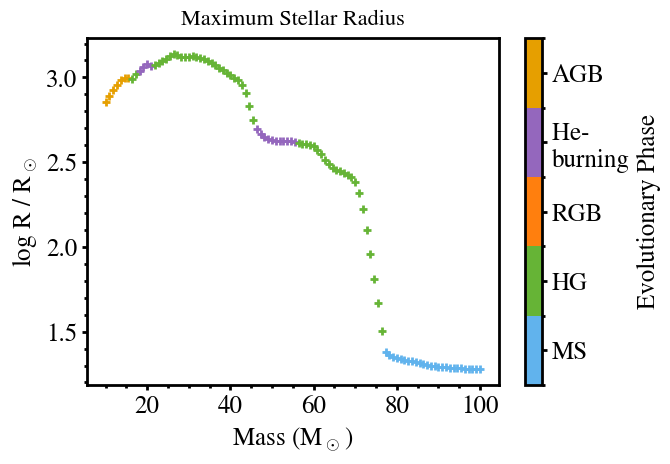
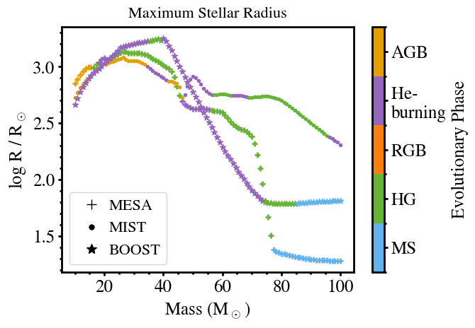
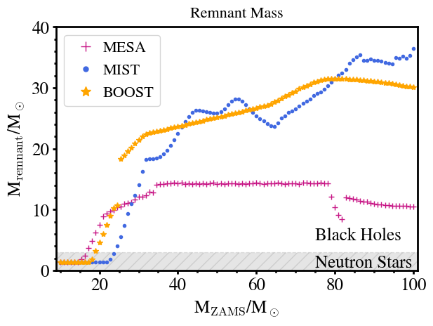

Running METISSE via Python (Optional)
This tutorial was generated from a Jupyter notebook using NBSphinx. The notebook as well as the python wrapper for metisse are available here.
If you choose to run this notebook, make sure the paths in the notebook for METISSE_DIR, run_dir and the track libraries are correct.
Import Python Packages
[1]:
from pathlib import Path
import numpy as np
import os
import metisse_wrapper as mw
Set up paths for running METISSE and saving output
[2]:
# replace it with your path
METISSE_DIR = "../../.."
run_dir = os.path.join(os.getcwd(),'run')
# Check if run_dir exists; if not, create it
os.makedirs(run_dir, exist_ok=True)
Compile METISSE (this will call ‘./mk’ in METISSE_DIR and copy the executable to run_dir). The optional clean variable cleans up the executables in the source directory. Set it to False if run_dir and METISSE dir are the same.
[3]:
mw.compile_metisse(METISSE_DIR, run_dir, clean=True)
Next step: set up the inputs as dictionaries.
[4]:
# Paths to the precomputed stellar track libraries
# (replace these with your actual directories)
metisse_params = {
"metallicity_dir": "/Users/poojan/stellar_tracks/MESA/METISSE_INPUT_FILES/Hydrogen/",
"metallicity_dir_he": "/Users/poojan/stellar_tracks/MESA/METISSE_INPUT_FILES/Helium/",
}
main_params = {
"initial_Z": 0.02,
"max_age": 2.0e4,
"number_of_tracks": 100,
"min_mass": 10.0,
"max_mass": 100.0,
"sampling_scheme": "Uniform",
"BHNS_mass_scheme": "Belczynski2008",
"write_output_to_file": True,
}
Run METISSE (this will launch the ‘./metisse’ executable inside run_dir)
[5]:
mw.run_metisse(run_dir,main_params, metisse_params)
Hertzsprung–Russell Diagram
The following script plots Hertzsprung–Russell diagram (HRD) from METISSE output files, color-coded by stellar mass.
[6]:
import pandas as pd
import glob
import re
import matplotlib as mpl
import matplotlib.pyplot as plt
from matplotlib.lines import Line2D
[7]:
plt.style.use('matplotlibrc')
[8]:
# Logarithmic color normalization for stellar mass
norm = mpl.colors.LogNorm(vmin=10, vmax=100.0)
cmap = mpl.cm.ScalarMappable(norm=norm, cmap='viridis_r')
cmap.set_array([])
# --- Read all .dat track files ---
base_name = os.path.join(run_dir, 'output')
file_name = glob.glob(base_name + "/*.dat")
file_name.sort()
fig, ax = plt.subplots(figsize=(6,5))
phase_lim = 5 # Limit the phases for clarity
# --- Plot each track ---
for eachfile in file_name:
# Extract 5-digit mass value from filename (e.g., '00005' -> 5.0 Msun)
mass = re.findall(r"[0-9]{5}", eachfile)[0]
m = float(mass) / 100.0
# Read stellar evolution data
evolve_data = pd.read_table(eachfile, sep=r"\s+")
evolve_data = evolve_data[evolve_data.phase <= phase_lim]
Teff = evolve_data['log_Teff']
L = evolve_data['log_L']
# Plot track with color determined by mass
ax.plot(Teff, L, color=cmap.to_rgba(m))
# --- Add colorbar for stellar mass ---
cbar = plt.colorbar(cmap, ax=ax)
cbar.set_label(r'Stellar mass [$M_\odot$]')
ticks = [10,20,30,40,60, 100]
cbar.set_ticks(ticks)
cbar.set_ticklabels([str(t) for t in ticks])
ax.set_xlabel(r'log T$_{\mathrm{eff}}$/K')
ax.set_ylabel(r'log L/L$_{\odot}$')
ax.invert_xaxis()
ax.set_title("Hertzsprung–Russell diagram")
[8]:
Text(0.5, 1.0, 'Hertzsprung–Russell diagram')

Maximum Stellar Radius
Th following script plots the maximum stellar radius reached during the evolution of stars of different initial masses, color-coded by evolutionary phase.
[9]:
def plot_max_rad(ax, name, i=0):
"""
Plot the maximum stellar radius as a function of initial mass.
Parameters
----------
ax : matplotlib.axes.Axes
The plot axis on which to draw the scatter points.
name : str
Directory under run_dir containing evolution track files (*.dat).
i : int, optional
Marker style index (default: 0). Allows differentiating model sets.
"""
base_dir = os.path.join(run_dir, name)
file_names = glob.glob(base_dir + "/*.dat")
file_names.sort()
for eachfile in file_names:
# Extract the initial mass from the filename (e.g. "00500" → 5.00 M_sun)
mass = re.findall(r"[0-9]{5}", eachfile)[0]
m = float(mass) / 100.0
# Read the stellar evolution track
evolve_data = pd.read_table(eachfile, sep=r"\s+")
# Find maximum stellar radius (in log R/Rsun)
R = max(evolve_data['log_radius'])
# Identify the evolutionary phase where max radius occurs
p = evolve_data['phase'].iloc[np.argmax(evolve_data['log_radius'])]
# Plot as a colored scatter point (color encodes phase)
ax.scatter(m, R, marker=markerlist[i], c=phase_colors[p-1])
return
def add_phase_colorbar(ax, colors, labels):
"""
Add a colorbar to represent evolutionary phases.
"""
cmap = mpl.colors.ListedColormap(colors)
norm = mpl.colors.BoundaryNorm(range(len(labels) + 1), cmap.N)
cbar = plt.colorbar(
mpl.cm.ScalarMappable(cmap=cmap, norm=norm),
ax=ax,
ticks=np.arange(len(labels)) + 0.5,
)
cbar.ax.set_yticklabels(labels)
cbar.set_label("Evolutionary Phase")
return cbar
# ---------------------------------------------------------------------
# Plot setup
# ---------------------------------------------------------------------
markerlist = ['+', '.', '*']
# Colors for different evolutionary phases (e.g., MS, RGB, HeB, etc.)
phase_colors = [
"#61b3ed", # MS
"#66B436", # Hertzsprung gap
'#ff7f0e', # RGB
'#9467bd', # He-burning
'#E69F00', # AGB
]
fig, ax = plt.subplots()
# Replace with your working directory path before running
# run_dir = "/path/to/METISSE_runs"
# Call the function to plot all stars in the given directory
plot_max_rad(ax, 'output')
ax.set_xlabel(r'Mass (M$_\odot$)')
ax.set_ylabel(r'log R / R$_\odot$')
ax.set_title('Maximum Stellar Radius')
phase_labels = [
"MS", "HG", "RGB",
"He- \nburning", "AGB"
]
# Add the phase colorbar
add_phase_colorbar(ax,phase_colors,phase_labels)
[9]:
<matplotlib.colorbar.Colorbar at 0x118a0e350>

MIST – To use MIST (Choi et al., 2016) EEP tracks at solar metallicity, the tracks can be downloaded from the website, while the corresponding metallicity and format files needed by METISSE are available from this page.
BoOST – Stellar model grids for Galactic metallicity (Szécsi et al. 2022), computed with the Bonn Code, are available here. The helper files required for METISSE are available here.
[10]:
# --- Rename existing output directory ---
current_name = Path(os.path.join(run_dir, 'output'))
new_name = os.path.join(run_dir, 'output_MESA')
current_name.rename(new_name)
# --------------------------------------------------------------
# Run METISSE with MIST stellar tracks
# --------------------------------------------------------------
metisse_params = {
"metallicity_dir": "/Users/poojan/stellar_tracks/MIST/",
}
main_params = {
"initial_Z": 0.014,
"max_age": 2.0e4,
"number_of_tracks": 100,
"min_mass": 10.0,
"max_mass": 100.0,
"sampling_scheme": "Uniform",
"BHNS_mass_scheme": "Belczynski2008",
"write_output_to_file": True,
}
# Run METISSE (custom Python wrapper function)
mw.run_metisse(str(run_dir),main_params, metisse_params)
[11]:
# Rename MIST output directory
new_name = os.path.join(run_dir, 'output_MIST')
current_name.rename(new_name)
# ---------------------------------------------------------------------
# Run METISSE with BOOST tracks
# ---------------------------------------------------------------------
metisse_params = {
"metallicity_dir": "/Users/poojan/stellar_tracks/Boost/tracks",
}
main_params = {
"initial_Z": 0.008, # Galactic metallicity for Boost tracks
"max_age": 2.0e4,
"number_of_tracks": 100,
"min_mass": 10.0,
"max_mass": 100.0,
"sampling_scheme": "Uniform",
"BHNS_mass_scheme": "Belczynski2008",
"write_output_to_file": True,
}
mw.run_metisse(str(run_dir),main_params, metisse_params)
# Rename Boost output directory
new_name = os.path.join(run_dir, 'output_BOOST')
current_name.rename(new_name)
[11]:
PosixPath('/Users/poojan/softwares/METISSE/docs/source/notebook/run/output_BOOST')
[12]:
markerlist = ['+','.','*']
fig, ax = plt.subplots()
# Plot maximum stellar radius vs initial mass for each model grid
set0 = plot_max_rad(ax,'output_MESA',0)
set1 = plot_max_rad(ax,'output_MIST',1)
set2 = plot_max_rad(ax,'output_BOOST',2)
handles = [
Line2D([], [], marker=marker, markersize=10, color='k', linestyle='None')
for marker in markerlist
]
labels = ["MESA", "MIST","BOOST"]
ax.legend(handles, labels, loc = 'lower left',handletextpad = 0.1)
# Add the phase colorbar
add_phase_colorbar(ax,phase_colors,phase_labels)
ax.set_xlabel(r'Mass (M$_\odot$)')
ax.set_ylabel(r'log R / R$_\odot$')
ax.set_title('Maximum Stellar Radius')
[12]:
Text(0.5, 1.0, 'Maximum Stellar Radius')

Remnant Mass vs Initial Stellar Mass
[13]:
def plot_remnant_mass(ax, name, i):
"""
Plot initial mass vs. remnant (final) mass for a given model.
Parameters
----------
ax : matplotlib.axes.Axes
Axes on which to draw the points.
name : str
Subdirectory under run_dir containing model output files (*.dat).
i : int
Index selecting the color/marker for this model.
"""
base_dir = os.path.join(run_dir, name)
file_names = glob.glob(base_dir + "/*.dat")
file_names.sort()
for eachfile in file_names:
# Read evolution track (tabular text file)
evolve_data = pd.read_table(eachfile, sep=r"\s+")
# Initial stellar mass (first row of the track)
mass = evolve_data['mass'].iloc[0]
# Final mass after evolution (last row of the track)
end_mass = evolve_data['mass'].iloc[-1]
# Plot a single point: (initial mass, remnant mass)
ax.plot(mass, end_mass, markerlist[i], color=color[i])
return
# ---------------------------------------------------------------------
# Style setup for three models
# ---------------------------------------------------------------------
color = ['mediumvioletred', 'royalblue', 'orange']
markerlist = ['+', '.', '*']
fig, ax = plt.subplots()
# Replace with your base run directory path before running
# run_dir = "/path/to/METISSE_runs"
# ---------------------------------------------------------------------
# Plot remnant masses from each model output directory
# ---------------------------------------------------------------------
plot_remnant_mass(ax, 'output_MESA', 0)
plot_remnant_mass(ax, 'output_MIST', 1)
plot_remnant_mass(ax, 'output_BOOST', 2)
handles = [
Line2D([], [], marker=marker, markersize=10, color=color[i], linestyle='None')
for i, marker in enumerate(markerlist)
]
labels = ["MESA", "MIST", "BOOST"]
ax.legend(handles, labels, loc='upper left', handletextpad=0.1)
ax.set_xlabel(r'M$_{\rm ZAMS}$/M$_\odot$') # initial (ZAMS) mass
ax.set_ylabel(r'M$_{\rm remnant}$/M$_\odot$') # final remnant mass
ax.set_ylim(ymin=0.0, ymax=40.0)
ax.set_xlim(xmin=9.0, xmax=101.0)
# Annotate physical regions for neutron stars and black holes
ax.text(75, 0.5, 'Neutron Stars')
ax.text(75, 5.0, 'Black Holes')
plt.fill_between([0, 110], 3, hatch="//", ls='--', alpha=0.1, color='k')
ax.set_title('Remnant Mass')
[13]:
Text(0.5, 1.0, 'Remnant Mass')
